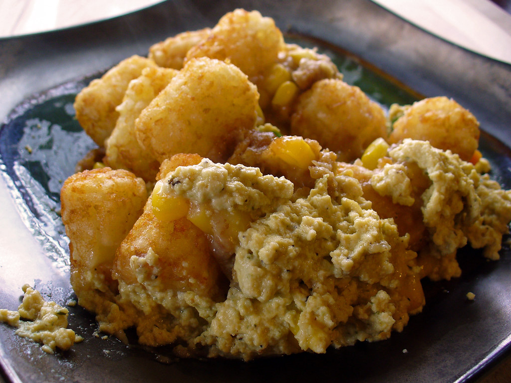

Back to Recipes
TaterTot Casserole

This quick and easy TaterTot Casserole recipe is a dish the whole family will love! Few dishes and only a handful of
ingredients make this a school night go to you won't forget! The crispyness of the TaterTots paired with the savory and
creamy soup will have you hooked! Plus, you can change your protein to a ground Turkey for a leaner version.
Ingredients
- 1lb Ground Beef
- 1 10.5oz can of condensed Cream of Mushroom soup
- Salt and Black Pepper to taste
- 1 16oz package frozen tater tots
- 2 cups Shredded Cheddar Cheese
Instructions
- Preheat oven to 350 degrees F
- In a skillet over medium-high heat, cook the ground beef until browned and crumbly about 7-10 minutes.
- Stir in the soup and seasonings.
- Transfer the beef mix to a baking dish. Top with tater tots, then the cheese as desired.
- Bake in pre-heated oven until the tots are golden brown, about 30-45 minutes.